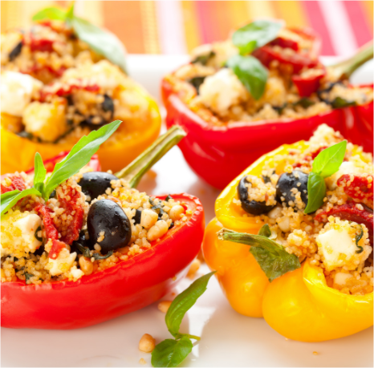

The perfect snack for any party or summer night
Jalapeno pepper halves are stuffed with cheese and sausage.
You will love this spicy appetizer treat!
Ingredients
- 1lb ground pork sausage(or beef)
- 1(8ounce) package cream cheese, softened
- 1 cup shredded parmesean cheese
- 1lb large fresh jalapeno peppers, halved lengthwise and seeded
- 1(8ounce) bottle ranch dressing(optional)
Instructions
- Preheat oven to 425 degrees
- place sausage in a skillet over medium heat, cook until brown. Drain grease
- in a bowl, mix sausage, cream cheese, parmesean cheese.
Spoon about 1 tblsp sausage mixture into each jalapeno half.
arrange stuffed halves in baking dishes
- Bake for 20 min in the oven, until bubbly and lightly browned.
(optional, serve with ranch dressing)